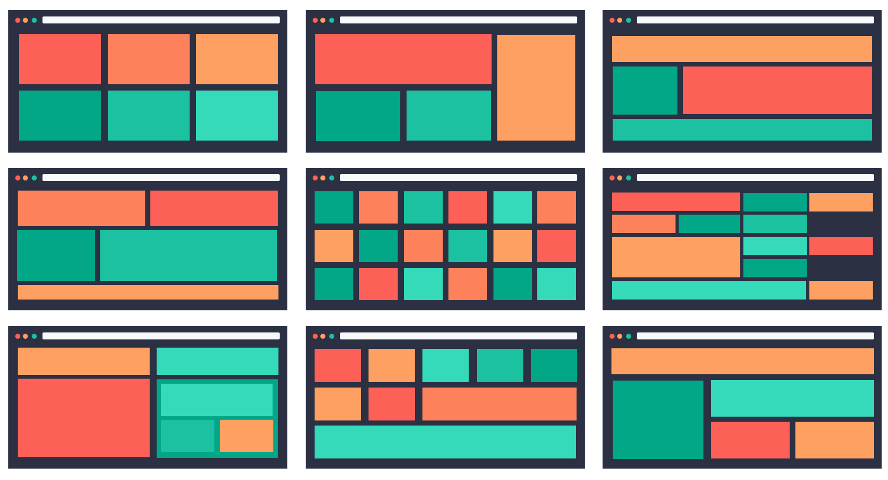

- När man skapar en layout med CSS Grid är grid-template-columns och grid-template-rows de egenskaper som bestämmer hur många kolumner och rader ett grid ska ha och hur stora de ska vara.
- Exempel: "grid-template-columns: 1fr 2fr;" skapar två kolumner där den andra är dubbelt så bred som den första.
- grid-template-areas används för att namnge olika delar av griden och bestämma var innehållet ska placeras.
- En media query är en regel i CSS som ändrar utseendet på en webbplats beroende på t.ex. skärmens storlek.
- Detta gör det enklare att skapa responsiva webbsidor som ser bra ut både på mobil, surfplatta och dator.
